Practice by topic
Topics follow the usual course order. Problems, solutions, and videos are posted as each is finished. Practice material is organic chemistry only for now.

Interactive tools for Newman projections, R/S, VSEPR, and equilibrium: see the tools ›
Other topics: text a request ›email a request ›
Free resources I recommend
Made by other teachers and schools. I link to them; I didn’t make them. Everything here is free to use. Anything that is only partly free is marked.
Free textbooks
- Organic Chemistry (OpenStax)OpenStax, Rice University (John McMurry)A complete two-semester textbook, organized by functional group. Read online or download the PDF.
- Organic Chemistry (OpenStax) on LibreTextsLibreTextsThe same OpenStax text split into short web pages, so you can link straight to one section.
- Virtual Textbook of Organic ChemistryWilliam Reusch, Michigan State UniversityA classic online text with clear explanations and built-in problems.
- Organic Chemistry with a Biological EmphasisTim Soderberg, University of Minnesota MorrisCore organic chemistry taught through biological molecules. Good for biology and pre-med students.
Video lectures
- UC Irvine Chem 51A (Nowick)James Nowick, UC Irvine27 recorded lectures covering the first quarter of organic chemistry.
- UC Irvine Chem 51B (Van Vranken)David Van Vranken, UC Irvine25 lectures on alcohols, alkenes, alkynes, radicals, NMR, and aromaticity.
- UC Irvine Chem 51C (Nowick)James Nowick, UC IrvineLectures on carbonyl chemistry, enolates, amines, and biomolecules.
- Yale CHEM 125aJ. Michael McBride, Yale UniversityA full semester that spends real time on bonding and why reactions happen. CHEM 125b continues it.
- Khan Academy Organic ChemistryKhan AcademyShort videos for reviewing one idea at a time.
Practice problems
- MSU Organic Chemistry ProblemsWilliam Reusch, Michigan State UniversityInteractive problems on naming, stereochemistry, spectroscopy, mechanisms, and synthesis.
- Chemistry Steps practice problemsProblems free; quizzes are paidChemistry StepsProblems for Organic I and II by topic, with step-by-step solutions.
- OpenOChem LearnFree accountOpenOChemDrawing, naming, and arrow-pushing problems with instant feedback.
- MIT 5.12 Organic Chemistry IMIT OpenCourseWareProblem sets and exams with full solutions.
- MIT 5.13 Organic Chemistry IIMIT OpenCourseWareProblem sets, exams, and notes with solutions for the second semester.
Mechanisms and arrow pushing
- Electron PushingHans Reich, ACS Division of Organic ChemistryAn arrow-pushing tutorial with practice questions and answers.
- ChemTube3DNick Greeves, University of Liverpool3D animations of over 100 reaction mechanisms that you can rotate.
- Pushing ArrowsLibreTextsA short primer on curved-arrow notation for students new to mechanisms.
- Master Organic ChemistryArticles free; some extras are paidJames AshenhurstHundreds of clear articles on mechanisms and common mistakes.
Spectroscopy
- WebSpectraCraig Merlic, UCLAOver 60 combined NMR and IR problems, beginner to advanced, with answers.
- IR Spectroscopy TutorialUniversity of Colorado BoulderWalks through IR spectra one functional group at a time.
- SDBS Spectral DatabaseAIST, JapanReal NMR, IR, and mass spectra for thousands of compounds.
- NMRDB predictorLuc Patiny and colleaguesDraw a molecule and see its predicted 1H and 13C NMR spectra.
Reference tables
- pKa tablesHans Reich, ACS Division of Organic ChemistryThe standard pKa tables in water and DMSO.
- IR absorption table (PDF)University of Colorado BoulderOne-page chart of IR frequencies by bond and functional group.
- NMR data tablesHans Reich, ACS Division of Organic Chemistry1H and 13C chemical shifts and coupling constants.
- Illustrated Glossary of Organic ChemistryUCLAAbout 2,200 organic chemistry terms, each with a picture.
Drawing and 3D viewing
- MolViewHerman BergwerfDraw a structure in the browser and see a 3D model you can rotate.
- PubChem SketcherNIH PubChemA browser structure editor that gives you SMILES and searches PubChem.
- AvogadroAvogadro projectFree desktop program for building and viewing molecules in 3D.